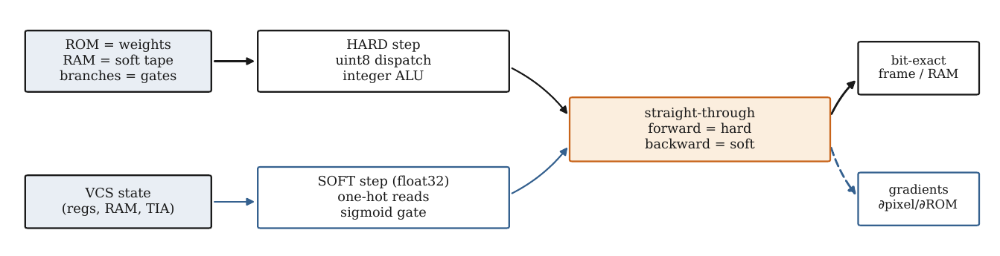
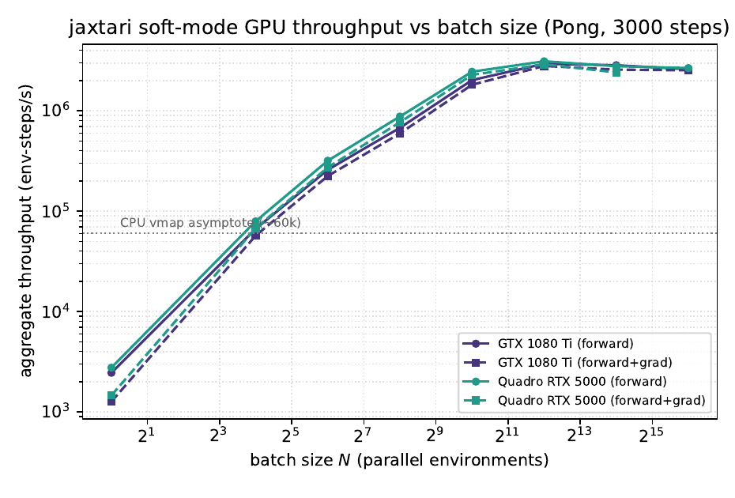
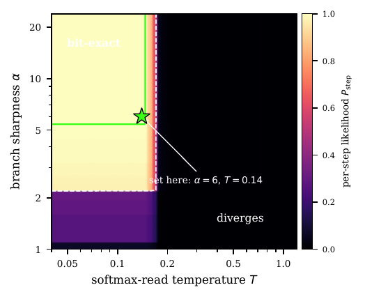

Two differentiable ports of the Atari 2600 — jaxtari (JAX/Python) and jutari (Julia) — run a full VCS (6507 CPU + TIA + RIOT + cartridge banking) in a bit-exact HARD mode and a differentiable SOFT mode. The SOFT forward is straight-through, so it stays bit-identical to HARD while letting gradients flow.
paper PDF · supplement PDF · Conformance code tour → · Two end-to-end differentiable ports of the xitari VCS, validated bit-for-bit
Every claim → script → command → artifact → runtime → hardware → verifying gate.
128 B RIOT RAM, per frame, 30 frames of NOOP from the standard ALE boot (60 NOOP + 4 RESET). Max diff 0 bytes/frame on all 64 games.
210×160 palette-index framebuffer, per frame, 60 frames of breakout_random_actions after the standard boot. Max diff 0 px/frame.
The JAX port is swept against xitari with the same paradigm; PXC2 then asserts jaxtari ≡ jutari frame-by-frame.
The executed straight-through SOFT path is byte-identical to HARD: with relaxation off (the default), soft_rom_peek / soft_ram_peek equal the original one-hot dot product over 5,000 random peeks, and toggling a relaxed run on and back off leaves RAM and the rendered frame unchanged (no state leak). The 4-panel video only illustrates HARD ≡ SOFT-STE while a relaxed (α,T) path drifts — the proof is the regression check, not the video.
The mp4 is an illustration, generated by the two input scripts. The bit-exactness is proved by the script in this row (verify_soft_ste.jl), not by the video.
Peak forward throughput: 2,947,553 env-steps/s on GTX 1080 Ti (batch 4096) and 3,119,115 on Quadro RTX 5000. 3000 CPU instructions/rollout, 10 repeats, batch sweep 1→65536.
Peak forward+backward (jax.grad) throughput: 2,799,870 env-steps/s on GTX 1080 Ti and 2,911,069 on Quadro RTX 5000 (batch 4096).
plot_gpu_throughput.py only reads the committed JSON and draws the curve — every plotted number traces to a measured wall time in results/gpu/*.json.
The heatmap is a per-step likelihood model, Pstep(α,T) = p_read(T)ρ · p_branch(α)f_b. Its inputs are measured by running the real soft simulator (soft_step) on the Space Invaders ROM for 3,000 steps: ρ (mean instruction length), f_b (branch fraction), the actual branch-offset set and the fetched-address histogram. dump_profiles.jl writes those profiles; make_relax_heatmap.py renders the outer combination. The operating point α=6, T=0.14 is independently bit-exact-verified by verify_soft_ste.jl.
The heatmap is a model, not a per-cell brute-force scan: the closed-form p_read/p_branch are evaluated over statistics measured from a real 3,000-step soft run on the SI ROM (dump_profiles.jl). The operating point α=6, T=0.14 is separately bit-exact-verified by verify_soft_ste.jl.
The inverse ∂(move-right)/∂joystick is computed by Zygote autodiff through the paper's bilinear sampler: −35.73 for left, +35.73 for right, 0 for up/down — identical across all three soft variants (Theorem 1), while the naive integer-index path gives 0 in every direction. The forward ∂screen/∂RIGHT is a finite-difference directional derivative through the sampler and lights up the cannon edges. The values live in the committed ji_grad.txt; si_joystick_fig.py only plots them — it computes nothing.
The gradients are computed here, not in the figure script. Input is the real space_invaders.bin ROM (not redistributed; obtained via AutoROM), stepped to the 35 s scene for the cannon footprint. Zygote.gradient differentiates the sampler objective; the forward saliency is a central finite difference on the joystick. Outputs land in out/ji_grad.txt (committed) and out/ji_*.raw (regenerable).
Reads the committed gradient fields/values from tools/xai_si_gradient/out/ and draws the 2×2 figure (scene, sampler saliency, naive≡0, inverse bar chart). A plotting step only — no computation. Listed separately so the figure script is not mistaken for the source of the numbers.
Pure plotting — no data is computed here. The bar heights in panel (d) are read from ji_grad.txt; the constant wbar = 0.26 (si_joystick_fig.py:73) is only the matplotlib bar width / side-by-side offset (3 bars × 0.26 ≈ 0.78 of the unit spacing), not a data value.
Cumulative commits / active sessions / calendar days computed directly from the repo git log up to the implementation cutoff.
Rasterised from the paper’s committed PDFs; click to enlarge.

Dual execution paths joined by the straight-through estimator.

Env-steps/s vs batch size, two GPUs, forward & forward+grad. Built from results/gpu/*.json.

Per-step likelihood; the bit-exact corner and operating point marked.
Each clip is three panels — xitari (reference C++) · jutari (our port) · per-pixel difference. The difference panel stays black for the whole clip (only the “DIFFERENCE” header label is lit): byte-for-byte identical output. Verified across the full length of all 64 games; a representative selection follows.
All 64 games render pixel-exact — see the screen sweep.
The supplement divergence clip and the narrated overview.
HARD | SOFT-STE | SOFT-relaxed(α,T) | diff. The HARD and SOFT-STE panels are pixel-identical (Theorem 1); the relaxed panel drifts.
Project talk (transcoded for web).